Walking from Hendaye to Lescun (2)
Part two
Translated from the Polish original.
Day eight: June 3
I get up around eight o'clock. Rodents woke me up once or twice during the night and I had to intervene and defend my supplies. I get off the platform and get ready to head out. The weather is a little better today: there are clouds, but occasionally the sun peaks out.
The trail leaves the valley and runs along a path through meadows towards the green mountain ridges. There are streams everywhere, with icy water gurgling and splashing. In one of them I notice a black and yellow salamander.
After an hour of climbing, I stop for a moment and admire the views. I take a photo of the valley. In the middle you can see the shepherd's house, and on the right by the stream there is a stone barn where the mice hosted me.
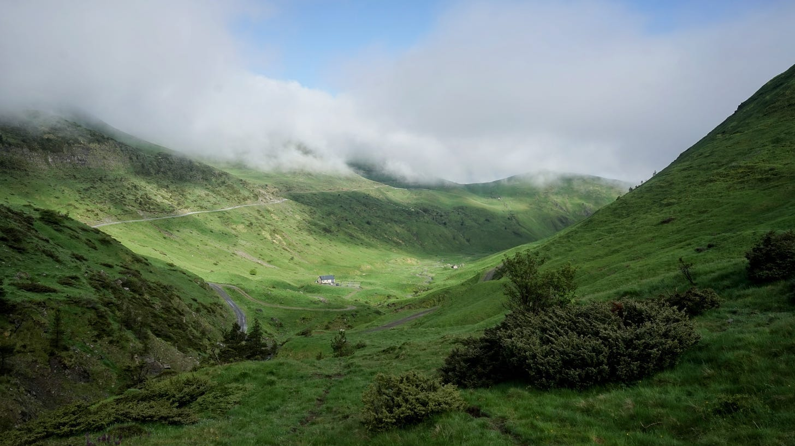
I move on. The blue sky temporarily prevails over the clouds and more and more high-mountain panoramas open before me. Then, around noon, the clouds descend and turn into a milky mist. I also encounter the first patches of snow here.
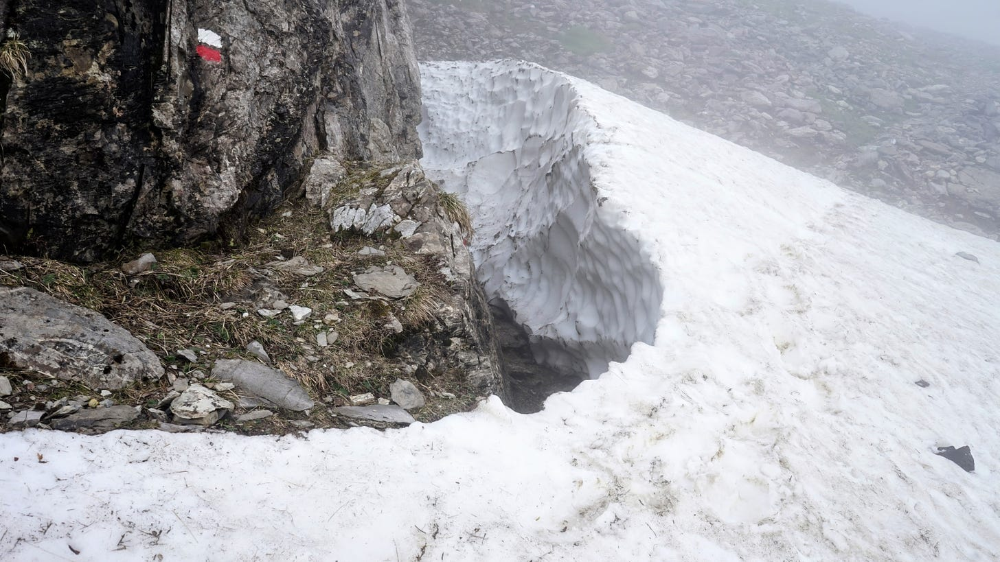
At one point, the sound of bells comes from the whiteness, and then a flock of sheep emerges from it. They walk in the opposite direction from me, and at quite a fast pace, which is not in the nature of sheep. It turns out that they are not alone, but follow a pair of shepherds (a man and a girl) on to another pasture. A large dog is makes sure the operation runs smoothly.
The path leads through a varied area. Due to poor visibility, I watch the landscape as if filtered through the imagination of an overzealous film director: every few steps, a rock with a stunted pine tree emerges from the void, then a stream, then a meadow full of bushes covered with yellow flowers. Now again a rock, a pine tree, and so on, only in a different order.
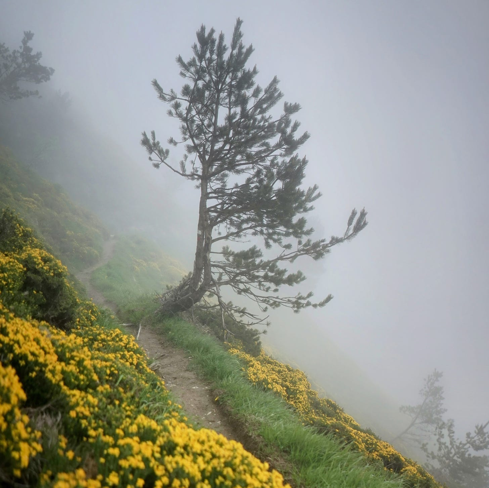
After a few kilometers of hiking, I reach the Belagua shelter. It is a newly renovated large building with a shiny tin roof. The dining room has large windows overlooking the mountains, and a fire is burning in the middle. A friendly young woman runs this shelter - she tells me she's from Catalonia. I order a coffee and write notes on the day's events.
It takes some time to negotiate what I should have for dinner. Basically, the plan is pasta and sausage for everyone, but I don't want meat, so the woman comes up with various other options for me. Finally, she offers to fry vegetarian burgers - I'm not a fan of them, but one shouldn’t be too picky in a mountain hut, so I accept.
Dinner is after seven. We all sit down at the table together. Apart from me, there is also a group of four Basques from Donostia who are finishing a two-day trip along the Swallow Trail (Ruta de las Golondrinas). It is named after the black-clad local women who, at the beginning of the 20th century, crossed the Pyrenees every autumn in search of seasonal work.
Apart from the Basque tourists, there are two foresters who monitor the flora in the mountains during the day and stay overnight in the shelter. The last guest is a man in his sixties - I'm not sure what he's doing here, because he has an unusual accent and I miss much of what he says. This gentleman - let's call him Gorka, although I don't know his real name - we will meet him again soon enough.
The food is simple but tasty, and I finish my stack of veggie burgers while the others eat thick sausages.
Now more tourists enter the shelter. They have lost their friend somewhere. Drama! Apparently the mountain rescue team is looking for them by helicopter. Phones are buzzing and anxious conversations are heard. Everything ends well - the tourist is located and she is safe.
After dinner, I chat a bit with the senior forester. I envy him his non-desk job in the heart of the Pyrenees.
Day nine: June 4
Today I get up early and have breakfast before eight. I'm making a detailed route plan for the next 48 hours. On this section, I depart significantly from the guide's suggestions — when it was written, the Belagua shelter was under renovation, so the author did not schedule an overnight stay in this area.
I'm planning to spend the night tonight in the Ansabère mountain hut, on the French side of the border. The path there leads first along the GR12 and GRT13 trails, and then along an unmarked path to the Col de Pétragème pass. From there, there’s a descent along the Camille trail. The name of this path comes from the name of one of the last native Pyrenean bears. Most of today's local bears are descendants of individuals imported from Slovenia in the second half of the 1990s. Native or immigrant, there aren’t many bears here, and there is not much chance of meeting them. So, let’s get moving.
The nature of the mountains here is different from the green rolling hills further west. The slopes are steep and the peaks bald, rocky, in places covered with sheets of gradually melting snow. In many lower places in the valleys, meltwater forms temporary pools.
The weather is sunny, the landscape is spectacular. I walk, absorb the views, and engage in various unanchored fantasies about highlander life.
There aren't many people here, but once or twice I see a few tourists in the distance. At one point, a hiker walking towards me along the trail. When we get close, he seems familiar. It’s Gorka. We stop for a moment — he asks me where I'm going. He looks a little surprised when I explain that I want to cross the pass to the Ansabère hut - he warns that it might be difficult. Well, we'll see, I say, and we part.
I leave the trail and follow a thin, sometimes disappearing path uphill. I am in the realm of the southern chamois, Rupicapra pyrenaica. The herd walks through the ravine below, and from a rock on the opposite side two individuals watch me closely.
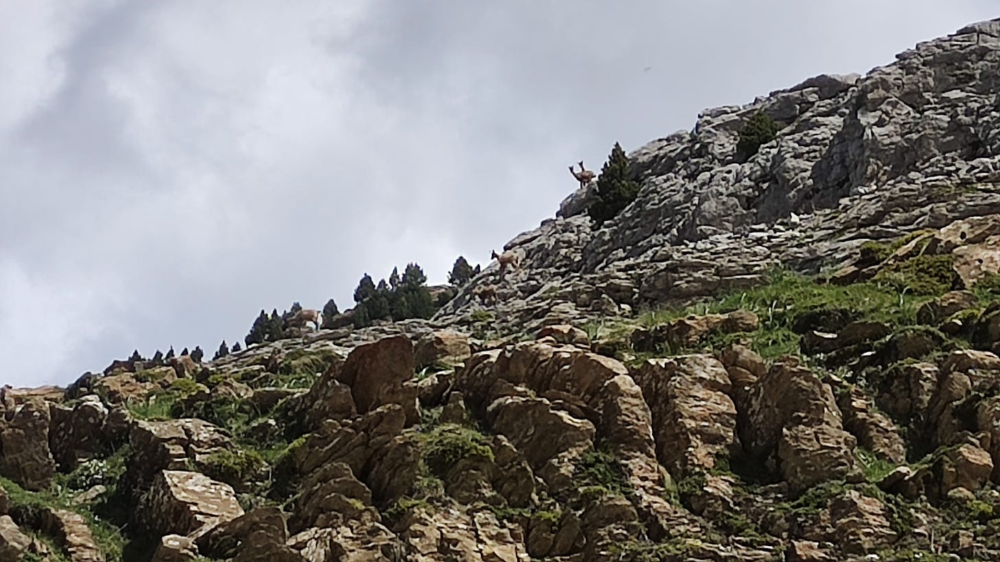
In addition to chamois, I also see, and hear, the ubiquitous marmots (Marmota marmota). Their characteristic whistles could easily be mistaken for the chirping of birds.
There are more and more patches of snow and entire snowfields. When the path is relatively flat, crossing them is easy, even in low shoes and without crampons. I am now on Camille's path - it is marked with green and yellow stripes painted on stones. The terrain gets rocky and uneven - sometimes one has to jump from rock to rock. I navigate scree slopes made of loose stones and gravel, which make it difficult to keep secure footing. Soon I reach a place where the path begins to descend towards today's overnight shelter. It gets steeper and snowier, but I see a green valley spreading wide below , so I push on.
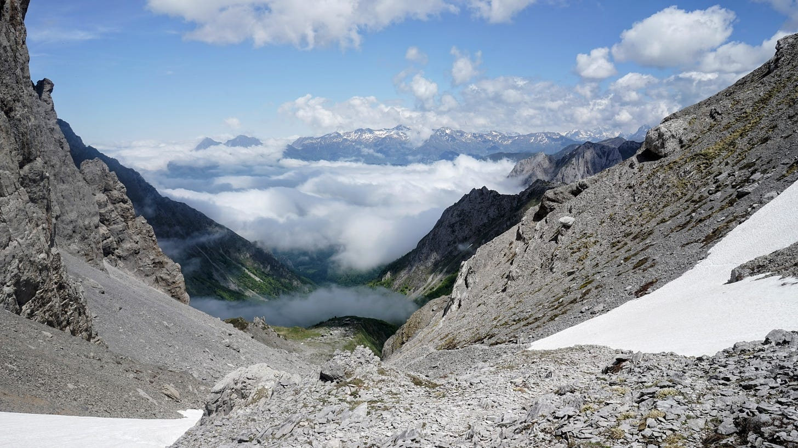
I look around for a safer alternative route. However, it seems that the only option is to go down the steep snowfield to the very bottom of the valley. I can't see the lower edge of this snow: perhaps it ends in an even steeper slope or a precipice. With a certain feeling of defeat, I decide it's not worth the risk, and turn back, only 1.3 kilometers in a straight line from my destination. The sun has been descending for some time now - it will soon be evening. I'll spend the night somewhere nearby, I just need to find a flat, grassy place. I wander along the slope for some time, more or less westwards. Soon I come across a small meadow among the rocks, and there is even a pine tree growing there. I pitching the tent. There is a lot of snow in rock crevices, which I melt into drinking water in the still warm rays of the setting sun. All around there is open space and extensive views of mountain peaks.
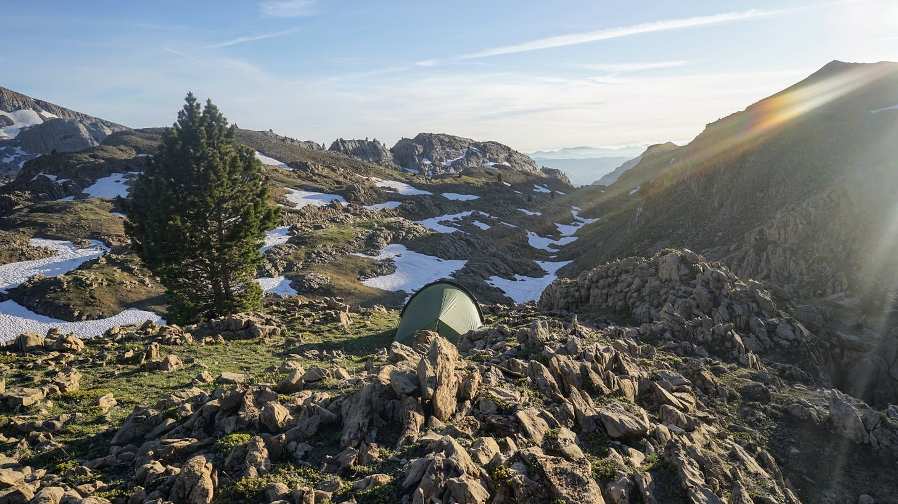
Before going to bed, I go for a short walk with my camera. I think about how today's minor failure turned into a memorable adventure.
Day ten: June 5
Today I will try to cross to the French side through another pass, a few kilometers in a straight line to the north. One can get there by crossing the Larra reserve, along the marked trails (GRT13 and GR12), and then on the path called Insole / Intzole. The path first leads through masses of limestone rocks, partly covered with low forests — a very interesting area, but progress is slow because one has to watch one’s step all the time. The weather is sunny and soon it starts to get hot.
Around ten o'clock I sit on a rock in the shade and take a short break. After a while, I notice several chamois maneuvering between the rocks. More and more of them are showing up. They are unaware of my presence and move towards me. After a few minutes, there are several dozen of them, with lots of kids, and several of them walk practically within my reach. Up close, you can see that these animals are actually related to goats. From a distance, they look more like deer.
I move on. The trail leads west for some time, towards the Belagua Refuge. From a distance I see the silhouette of a person walking from there. After a few minutes I recognize Gorka. It turns out that he spends the nights in the shelter and hikes in the mountains during the day. I explain that I failed to get down to the Ansabère hut yesterday and that I will try the Insole path. He says there shouldn't be any problems there. Encouraged, I say goodbye to Gorka and move on.
The trail begins to climb uphill and crosses more and more snowfields. They are not too steep and do not impress me as much as yesterday. I go through them boldly, just being careful not to step on some thin layer of ice covering a deep hole. There are many such places because the snow melts from underneath and ice pits form underneath. At times I lose the trail, because some boulders with signs are under the snow, and I wander around looking for the right path. All around me lie the imposing steel-gray bodies of the mountains.
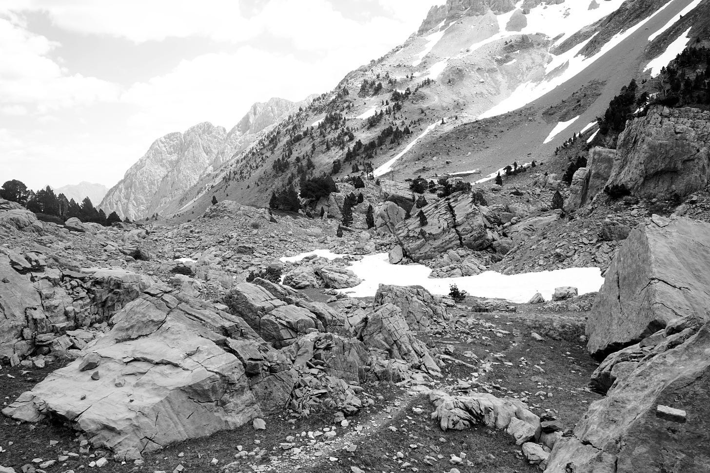
In the distance I see a hiker confidently moving through the snow. Once we are next to each other, after exchanging a few phrases in Spanish and French, it turns out that he is English, so we switch to his language. I see that he is an old-school wanderer, wearing worn-out heavy leather boots, with a paper map and compass in his hand, with a complexion damaged by the sun and frost. He says he hikes without a special route, following familiar paths and climbing peaks as and when he feels like it.
After wading through a few more snowfields, I reach the pass. The descent this way turns out to be quite easy and I make rapid progress. Today I plan to spend the night at the Marmitou springs, where, according to my guide, there are good places to camp. I get there too early (shortly after 4 p.m.), but it's beautiful and I'm in no rush, so I decide to end the walk for the day, despite the early hour. It is a wide clearing surrounded by high peaks, crossed by several streams and covered with fresh vegetation. There are also some rocks and trees, flat places for a tent and a few stone circles for campfire. I lie down in the shade and take a little nap.
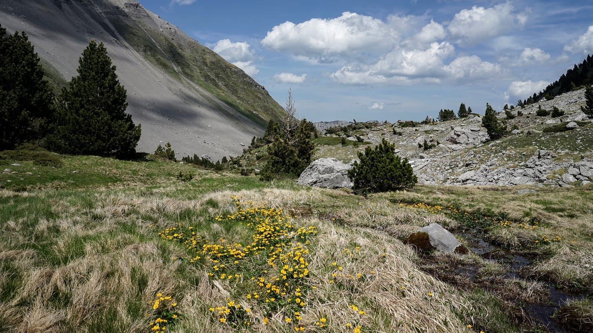
After some time, someone's footsteps wake me up. A young tourist approaches and starts talking. It turns out that he also plans to spend the night here, and that he’s walked here from the Belagua shelter. He's a boy from England, called Loll, and he's on vacation after finishing his bachelor's degree and before starting further studies. He has some complicated plan to go through the entire HRP, but with a break for meetups and side trips with family or friends. It's a bit early in the season for the cetral part of the HRP, but at least he has mini crampons, so he might make it.
We pitch tents on opposite sides of the stream. In the evening we make a bonfire in one of the stone circles, eat dinner and talk about this and that, mainly about the hike. He also spent the night in Ardane's hut a few days ago, met a shepherd, and unwantedly shared his food with mice.
The next day we both plan to go to Lescun and spend the night there in one of the gîtes d’etape. We don't plan to go there together because we both prefer to walk solo, at our own pace, enjoying the solitude. We'll meet in town.
Day eleven: June 6
I wake up early and first take some photos of the landscape in the early sun. Brilliant white snow contrasts with the grass and the raw gray rocks. There is water everywhere, gurgling and sparkling with the reflected sun.
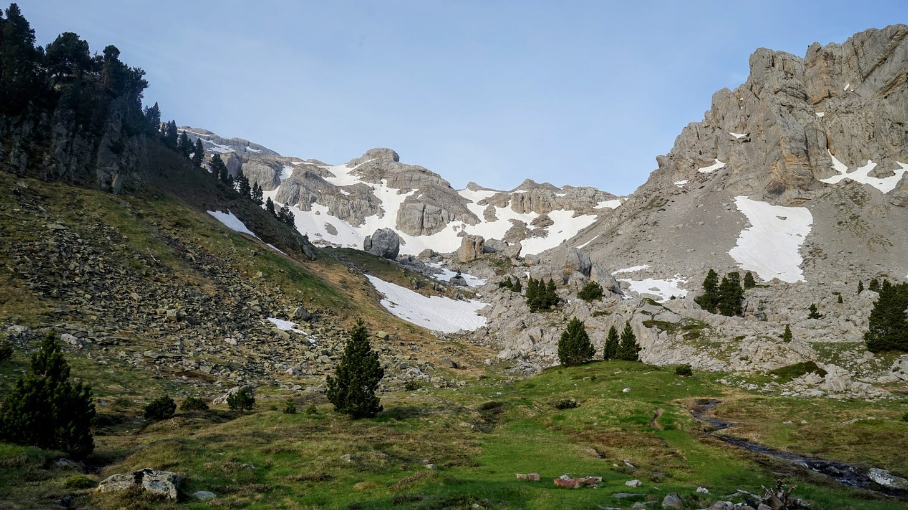
Loll's tent is still there, so he's probably asleep. I'm on my way. The path towards Lescun first leads through the grassy valley of the Anaye river with a view of the Pic d'Anie / Auñamendi, and then descends steeply through the forest to the Sanchèse plateau. I walk quickly and reach the bottom after about two hours of walking. Anaye creates a large waterfall here. I rest and admire the rainbow in the mist surrounding the falling water.
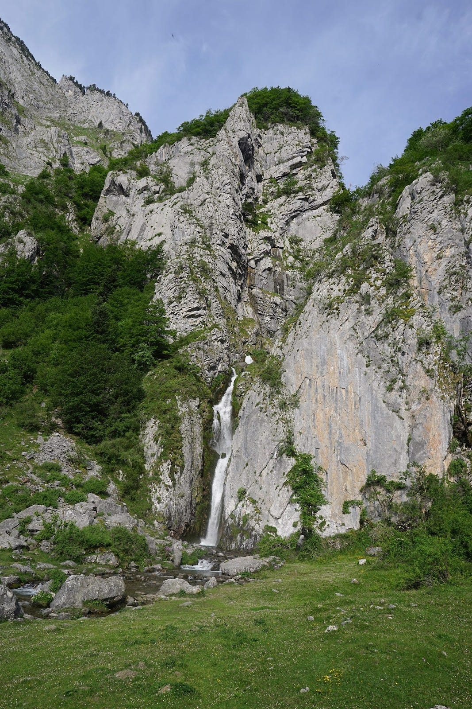
I reach Lescun before noon. Along the way, I encounter bilingual signposts, but here the local language is not Basque but Occitan. It is a Romance language closely related to Catalan. The architecture is also different from the whitewashed houses in the Basque country: here the houses are built of light gray stone and the roofs are covered with dark slate tiles.
Lescun is a tiny town. There is one shop selling everything, a post office, a town hall, a library and a church. Life revolves around hiking: this town is the base where many Pyrenean trails begin (or in my case end).
In the gîte d’etape I will stay overnight, my bed is not ready yet, so I leave my backpack at the reception and go to the store. I buy a few souvenirs for family and friends. There are a few tables near the shop, so I sit down and drink coffee and eat cake and read.
After a long time, Loll arrives. He complains about his knee, which hurts and forces him to walk carefully and slowly. With such an injury, walking along the HRP will not be easy, so he decides to rest in Lescun for a few days.
In the afternoon I go for a short walk around town. At one of the houses I see that they offer sheep's cheese, but it turns out that they don't have it at the moment, because at this time of year the sheep are nursing lambs. Then I visit a ceramics shop where a lady sells her handicrafts and I buy another souvenir from her.
Until the evening, I mostly sit and read in one of the two cafes in the square. At the next table I hear Polish voices - a couple of tourists. When a passerby talks to the Pole in French about his hat, I help them communicate. Then we chat for fifteen minutes. The couple came here from the Western Pomerania, probably from Świnoujście. They are surprised at how beautiful and peaceful the Pyrenees are compared to mountains famous mountains ranges. I hope they will remain like this for a long time. My journey is almost over, but I have only explored a small part of the HRP route, with the highest mountains and most difficult sections further east. I’ll keep them for the next year.
Dinner is in the gîte d’etape's dining room, as usual at a common table for all guests. Loll and I sit down. They serve us very simple but tasty food: rice and lentils. Conversation slowly begins - on our side of the table there are two surgeons from some city in France, a Catalan from Barcelona traveling solo and two Spaniards from Valladolid. The conversation switches from French to Spanish, from Spanish to English and back, depending on who is speaking to whom. Lolla only speaks English and gets a bit lost at times. The Spaniards from Valladolid are planning to follow Camille's path tomorrow - I tell them that it defeated me and that there may be too much snow for them as well, as they are also walking without crampons. They don't seem very convinced. I understand them — Gorka's warnings hadn’t convinced me either.
Most guests go to bed soon. I talk to the Catalan guy for some time. He is in good physical shape, but already retired. He tells me fragments of the story of his first marriage. He claims that it ended mainly because he took his wife ona a hike in Chile, at an altitude of 6,800 meters above sea level. — this expedition was not a success for the couple. Now he is older and wiser and goes on these types of adventures solo.
We say goodbye. I walk across the square to the building with the dormitory. It is already dark and the town is slowly falling asleep.
Epilogue: June 7
Today around noon I’m catching a train to Pau. The train station is in Bedous, about 10 kilometers by road from Lescun. I ask the woman running the gîte d’etape about a walking trail to get there — she shows me the route on a map. It's a little more than 10 km, but you don't have to inhale exhaust fumes or try hitchhiking. I'm on my way.
The path leaves the town and leads along the slopes of meadow hills. There is some drizzle and a lot of clouds. There are banks of fog in the valleys, with the Lescun cottages clustered tightly among them.
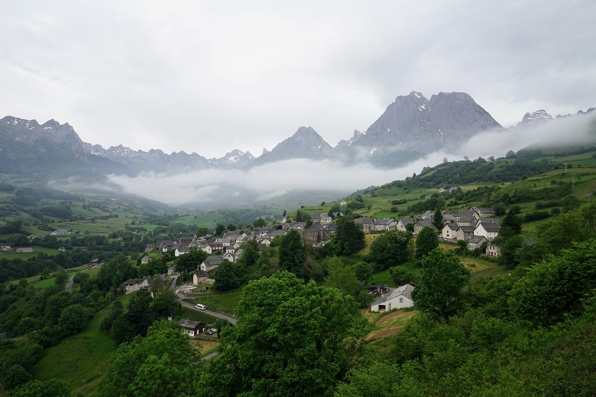
The road enters deep into a dense beech forest. At first I passed a few tourists, but now there is no one here. The path is blocked by huge recently fallen trees — I have to clamber over them to make progress. The next obstacle is a fast-flowing stream, over which someone threw a couple of rickety tree trunks and stretched a rope, seemingly to serve as a handrail. I jump from log to rock, from rock to log and then I'm on the other side.
After three hours, the path begins to descend into the valley again — I approach Bedous. I walk through the sleepy outskirts of the town and come to the small train station. Still half an hour until the train leaves. Outdoorsy passengers gather. The train is tiny, sort of like an oversized tram.
In Pau I take the funicular from the station to the Boulevard des Pyrénées. The street is named so for the view of the mountains it affords. From this distance they are only a miniature, a grey-green wavy line on the horizon. I turn away from the panorama and walk to downtown. After a few more hours spent in this city full of reminders of its past glories, I shall board a night train to Paris, and from there will head on to the Netherlands, a place so flat that the mountains will only seem a figment of a fevered imagination.
Fin.